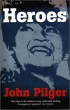
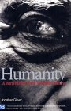

Books have the ability to make us something higher, to open our mind to the thoughts of others in a way merely interacting cannot. These are books I have read and got something meaningful from, most of them have changed the way I think.
|  | Heroes : John Pilger |
| Heroes is one of the most inspiring and challenging books I have ever read. John Pilger is an example of what true journalism is about, he hasn't spent his entire life sitting around waiting for the next PR event or corporate press release to come through, he has seen the killing fields of Cambodia, the slave gangs of Burma, the horror of the USA's attack on Vietnam, and he writes about it with a passion and insight that only having been deeply moved can produce. That said he is not one for hyperbole, and this gives his writing a clarity of purpose that is rare in reporting these days. Heroes is written from his personal experiences during some of the most important events in the second half of the twentieth century, to not know about these things is to pretend that only the deaths of those in the western world matter. Heroes asks a question which strikes at the heart of what we regard as worthwhile in society, who is the real hero of humanity, the sports star, the politician, the billionaire, or a mother working tirelessly to raise her children in a war zone where tilling the soil can mean sudden death. Read Heroes, the passion that Pilger puts into his writing about the less fortunate world, is something we all need to wake us from our consumerist slumber. |
|  | Humanity : Johnathon Glover |
|
"A Moral History of the Twentieth Century". The enormity of this book and the relevance of the questions it asks almost makes it a duty as a member of society to have read it. It transcends questions about whether it was good (which it was), in that it is absolutely necessary. Perhaps many of us don't like to read about uncomfortable things, and this book is full of them, but sometimes we have to momentarily put aside our immediate desires and play our part as a member of society in the human story.
Looking at some of the great atrocities of the twentieth century, among them Nazi Germany, Stalins Russia, Mao's China, Pol Pot's Cambodia/Kampuchea, Rwanda, the Balkans and Hiroshima, the author through excellent historical research asks what was the mindset that allowed them to happen? Not only of those committing the atrocities, though they get primary focus, but also the societies around them which supported it, the belief structures which made people act as they did during terrible crimes against their fellow humans, whether that was to help lead them, join them, passively support them, look away, or resist against them. These questions are some of the most important that confront humanity, and they have a continued relevance to our world today. Asking how people in Nazi Germany could allow Non-Aryans to be taken away and slaughtered is not so remote from asking how we can continue to allow the same thing to happen today in other countries. I echo the world communities response to the Nazi's "Never Again", but to see pictures of children starving to death in a world with plenty of food, reminds me of the pitiful pictures of survivor's of Auschwitz and other death camps. We allow this to happen, we look away, just as others have looked away before us through history. Ultimately the society we want in the future is difficult to be precise about, but we know in a large part what we don't want, things like torture, cruelty, inhumanity and racism. This book is a manual of the shape these things have taken in our modern world, and we need to understand them if we ever hope to have world without them. Read this book, get your friends to read this book, the more thinking people who read this book, the closer we will be to a better world. Once you have read it, you will understand that it is one of the most important books you will ever have in your hands. You can read some of this book at Amazon, but for the full picture I urge you to read it all. |
|
|
I May Not Get There With You : Michael Eric Dyson |
| "The True Martin Luther King Jr.". Martin Luther King Jr. was perhaps the greatest citizen of the US in the twentieth century and the US has a national holiday reflecting this status on his birthday. I knew little about him apart from his inspiring "I had a dream" speeches and a few sample's on PE records, and it was wanting to learn more about this great man tha prompted me to buy this book. The main focus of the book is rescuing MLK's legacy from those who have shamelessly used his name to support their own, often right wing political agendas. MLK was a radical who believed strongly in Social Democracy, one of his famous quotes was "When you are right, you can't be too radical". He strongly believed in reform of our systems of government and in providing equality of outcomes to all peoples, not just theoretical equality of opportunity. A flawed man, particularly in his attitudes towards women, he also had profound, transcendent moments which will make him forever one of the greatest. Hounded by the Hoover's FBI who were convinced he was a communist, facing angry mobs and police dogs in the deep south and hated by right wing groups who eventually shot him down in Memphis, King lived a life unbowed. Reading this book was an inspiration to me. If you too would change the world, I recommend the words of this great African American man. |
If there is a book you think I should read, send me the reasons why and I will see if I can get around to it. If you are really keen send it to me.
You can search and purchase books from this Amazon box...